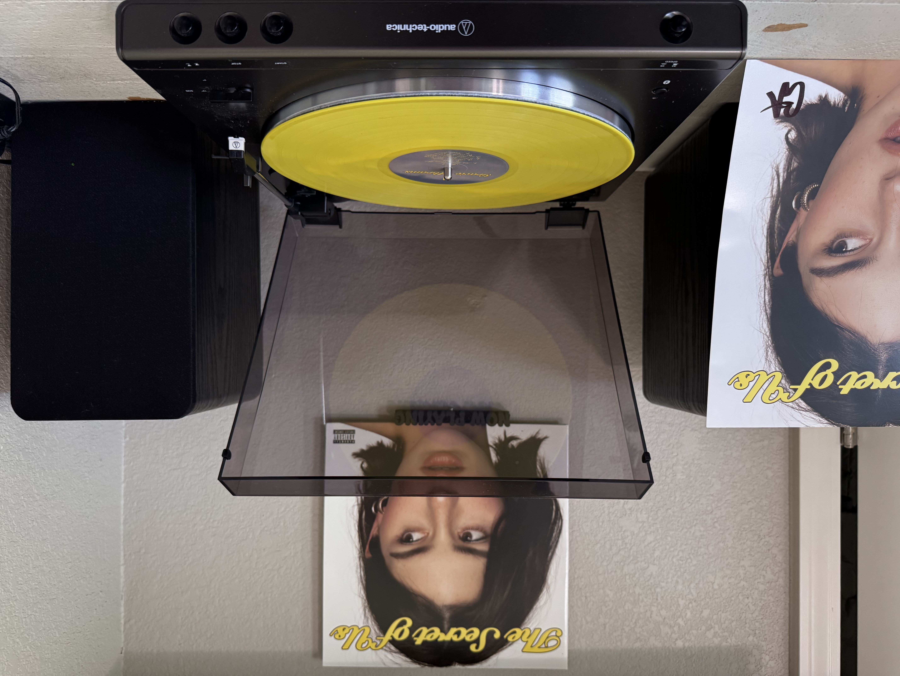
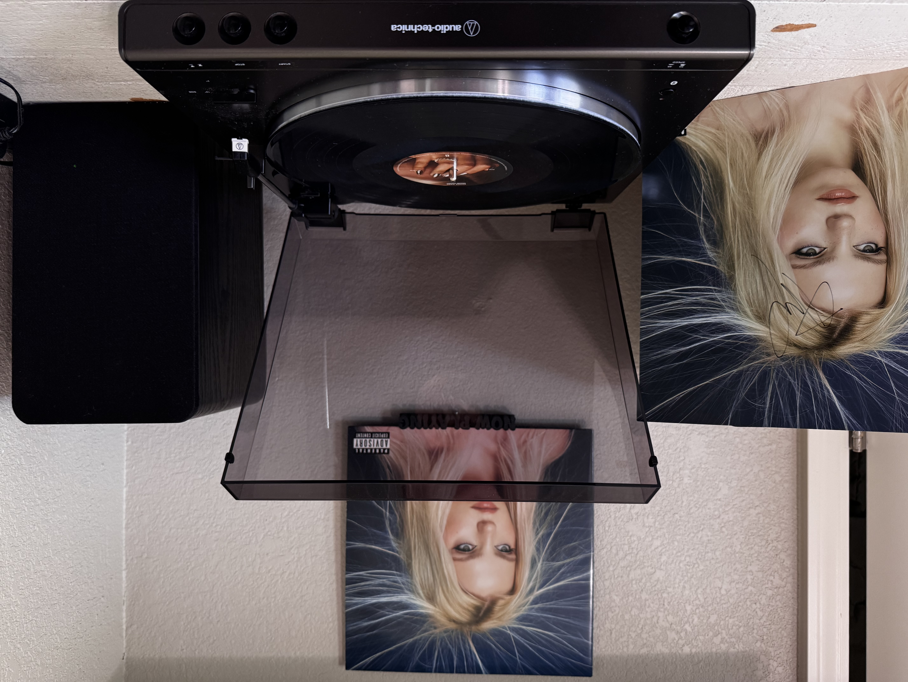

This is one of those albums that feels like reading someone’s diary and realizing half the pages could’ve been written by you. I made my brother go to the concert with me — which means something, because eight hours with him can be a lot. He’s kind of annoying, but he came anyway, and honestly, it made the whole experience even sweeter. My vinyl is also signed, which makes it feel even more personal and special to me.
I chose “Risk” as the song to show because it’s fire. It’s obsessive in the exact way I get obsessive — dramatic, delusional, hopeful, spiraling, all at once. It feels like the kind of situation that would definitely happen to me. The other singles are amazing too — “I Love You, I’m Sorry” and “Close to You” are both great, and “Full Circle” feels like the grown‑up, self‑aware version of “I Miss You, I’m Sorry,” which is wild in the best way.
I’ve loved Gracie since her minor EP — that was the era that made me feel like she and I had the same brain when it came to music taste. There’s something about the way she writes that feels like she’s narrating thoughts I’ve had but never said out loud. And I love her friendship with Audrey Hobert so much. Audrey’s music is fantastic too — funny, quirky, emotional in the strangest and best ways. The two of them together are such a comfort duo. It makes me happy seeing artists who genuinely love each other and make each other better. I think that’s part of why Gracie’s music hits so hard for me: she surrounds herself with people who feel things deeply, and it shows.
I really love every song on this album, but “I Knew It, I Know You” is my favorite. I’ve felt that exact feeling before — the ache of knowing someone too well, the frustration of seeing the same patterns repeat, the heartbreak of loving someone who keeps slipping through your fingers. Gracie puts that feeling into words in a way that makes you feel seen and exposed at the same time.
And my favorite Gracie Abrams song overall is “Best.” It’s the kind of song that punches you in the chest because it’s so honest. It’s messy, self‑aware, and painful, and it reminds me of all the times I’ve blamed myself for things that weren’t fully my fault. It’s one of those songs that stays with you long after it ends.

This is one of the most nostalgic vinyls I own. I grew up listening to “The Summer of ’69” with my family, and it always felt like one of those songs that belonged to all of us. It’s even more special because my mom was born in June of ’69, so the song has always felt tied to her in this really sweet, full‑circle way. My sister got me this preloved vinyl for Christmas last year, and it means so much to me. It helps me feel closer to my mom and to my childhood — like I’m holding a little piece of the past that still feels warm and familiar.

This is such a fun vinyl to own because it captures her energy in a way the studio versions never fully can. There’s something about hearing her live — the screaming, the breathlessness, the way she throws herself into every lyric — that makes the whole album feel electric. This vinyl feels like holding a piece of that moment, like being in the crowd even when you’re just in your room. I love how unfiltered and chaotic she is onstage; it makes the songs feel even more real. This vinyl reminds me why I love her so much — she’s messy, emotional, dramatic, and completely herself, and hearing her perform these songs live makes me love the entire GUTS era even more.

This album means so much to me because her vocals are genuinely some of the best of our generation. There isn’t another artist right now who can sing with the kind of power, emotion, and control she has — it’s insane. I chose “Snow Angel” as the song to show because it proves exactly that. The way she builds, the way she belts, the way she pours everything into it… nobody else does it like her.
My favorite song of hers probably ever is “Talk Too Much,” the first track on this album. I found Reneé during my freshman year of school, when I was juggling being a full‑time student and a full‑time caretaker for my mom while she was sick. Everything to Everyone (Deluxe) had just come out, and the extended version of the title track song honestly changed my life. It made me pause and really understand what I was going through — that it was okay to feel pressure, exhaustion, and burnout. It taught me that it’s okay to say no to friends when they want you to go out and party, because sometimes you’re carrying things they can’t even imagine.
Even now, I’ve realized I’m a lot more grown up than people my age because so many of them had zero empathy for my situation when my mom was sick and right after she passed. I’ll never forget someone saying, “Let’s go celebrate end of semester,” and I was like… my mom passed not even a full week ago. It showed me how different my reality was from theirs.
I look up to Reneé so much because she’s honest, direct, and refuses to let people walk all over her. She’s not a doormat — she stands up for herself, and I’ve learned a lot from watching her do that. She’s confident, emotional, caring, and unafraid to be all of those things at once. She’s my second‑favorite artist of all time after Taylor. And this vinyl is signed too, which makes it even more special to me.
I’ve also seen Reneé live twice — once on the Snow Angel Tour with my friend Austyn, and once on the BITE ME Tour with my sister. Both shows were unforgettable in completely different ways. Seeing her perform live made everything I love about her even clearer: she’s bold, emotional, hilarious, and brutally honest in a way that feels freeing. Reneé has genuinely taught me not to be a people pleaser. She makes me want to do what I want to do, not what other people expect from me. Watching her stand her ground and speak her mind has helped me learn how to do the same.

This is so special to me because I’ve followed Sabrina since the very beginning of her career — like Girl Meets World era beginning. I loved her first album Eyes Wide Open, and I still listen to all her older music to this day. Watching her rise in the industry lately has been so fun, and she deserves every bit of it. I know how hard she works, and I know how much her old label made things difficult for her, but she pushed through anyway.
My favorite track on this album is the one I chose to show — “Taste.” I love this song so much I literally bought the movie‑poster version of it. I love horror, so it makes perfect sense. But even without the music video, it’s still my favorite song. And as a Camila and Sabrina fan… the whole situation is hilarious. I’m not explaining the lore to you, though. It was also fun seeing Jenna and Sabrina together because they’re both Disney Channel alumni.
The album itself is incredible — it even won Best Pop Vocal Album at the Grammys. I love music with humor, and that’s exactly who Sabrina is. She will always be funny, even when she’s being emotional. I got to see her live for the first time on the Short and Sweet Tour with my sister. It was Halloween night, and Sabrina dressed as Tinker Bell — which was my favorite costume she wore, because Tinker Bell has been my favorite Disney character forever. She was also Sandy from Grease (a movie I watched with my mom probably twenty times) and… a Playboy bunny. No comment.
I also really love “Dumb & Poetic” and “Sharpest Tool,” but honestly this album is no‑skip. It’s so good. I always recommend “Good Graces,” though. And honestly, I’m short and sweet too, so the album title feels fitting. I really wanted to include one of my picture discs in this list, but on the player you couldn’t see what it was, so I added my other Short and Sweet vinyl to the photo as well.

This is one of my favorite Taylor vinyls I own, even if it’s technically the Target version. I love the manuscript concept so much. I knew this album was written to close out the Eras Tour era — such a huge part of her life and accomplishments — and you can feel that in every song. It’s reflective, dramatic, self-aware, and honestly kind of devastating in the most Taylor way possible.
“The Manuscript” is a song that I knew was written to close out the Eras Tour the very first time I heard it. You can really see Taylor’s thought process of the album — the way she’s trying to understand everything that happened in her life, from a six-year relationship to feuds she never deserved and so much more. The Anthology shows all of that too, giving even more context to everything she’s been carrying.
My favorite songs from TTPD are probably “Who’s Afraid of Little Old Me?”, “The Smallest Man Who Ever Lived,” and “But Daddy I Love Him.” They all hit so differently, and they show how sharp and emotional her writing still is after all these years. I chose “Fortnight” as the song to show because the music video is so cool — all the cameos, the visuals, the whole vibe. It’s just a great album overall, and I listen to it all the time.
I’ve loved Taylor’s music since I was seven years old. My mom took me and my sister to the Speak Now World Tour, and ever since then she’s felt like this real-life princess to me. She’s so smart and kind, and she’s cringe in the best way — completely unafraid to be herself. That’s always been inspiring to me.
My mom choosing the Speak Now World Tour as our first concert genuinely changed my life and my sister’s life. It gave us a celebrity to look up to who had real values, and my mom knew exactly what she was doing when she picked Taylor for her young twins. Everything about the way I treat people and the kind of person I try to be every day comes from what I learned by watching and listening to Taylor. I spent so much of my childhood with her music, and she’s always been someone who expresses herself honestly and fearlessly. My mom shaped who I am by loving Taylor enough to choose that concert for us, and that decision has stayed with me ever since.